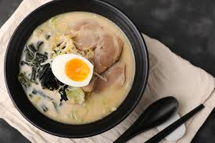

① 돈코츠 라멘 (Tonkotsu Ramen)

재료 (4인분)
- 돼지 등뼈 또는 사골 1.5~2kg
- 물 4~5L
- 생강 1쪽, 대파 2대, 마늘 5쪽, 양파 1개
- 간장 3큰술, 맛술 2큰술, 소금 약간
- 라멘 면 (삶은 것)
- 고명: 차슈, 반숙 계란, 숙주, 파, 김 등
조리 방법
-
핏물 제거: 뼈를 찬물에 담가 핏물 제거
후 끓는 물에 데치고 씻기
-
육수 끓이기: 뼈 + 채소 넣고 5~6시간
이상 끓이기 (중간에 거품 제거)
-
간장 타레: 간장 3 + 맛술 2 + 육수 약간
끓여 간장 베이스 준비
-
완성: 타레 + 육수 → 면 넣고 → 고명 올려
마무리
Tip: 계란은 반숙으로 삶아 간장에 재워두면 풍미가
깊어집니다!